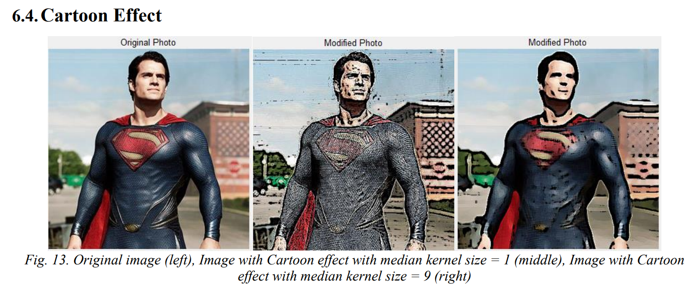
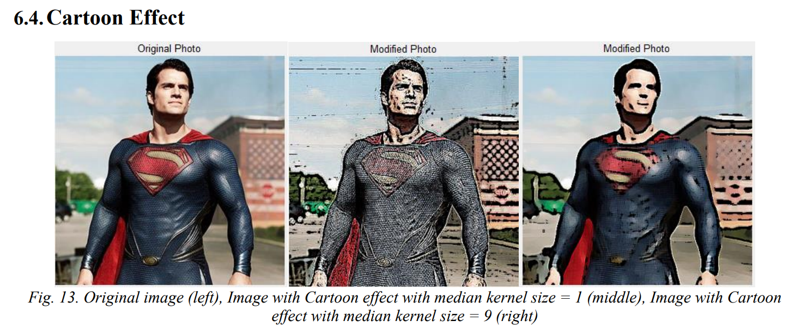

Image Processing GUI: An experiment with DSP filters
University of Washington, Seattle
10/2019 - 12/2019
Keywords: Digital signal processing, Python tkinter GUI, Gaussian noise reduction, Canny edge detection, Bilateral blurring filter, HSV/RGB color encoding
Role
Impacts
Skills
Descriptions
I implemented a simple image enhancement on Brightness, a complex blurring with a bilateral filter, and an image processing technique with Canny edge detection on a GUI created with Python tkinter package. Users will be able to play with the effects with a slider that can adjust the magnitude of the effect. A cartoon effect will also be available to users with a slider to visualize the effect of noise reduction in the carton effect. Lastly, users can load their desired images to the program and save the result images from the program.
 
